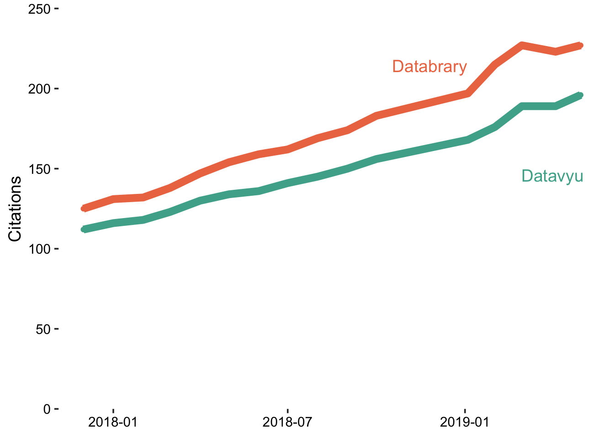

Set parameters for accessing Google sheet.
key <- "1tvlIQzULrMtXo97aJu71ljdTmNXkwwpU9eOOasVer3g"
db <- gs_title('Databrary-analytics')Now, let’s load the data about the number of institutions and investigators.
old_citations <- db %>%
gs_read(ws = 'citations-monthly')# Get citation counts from Google Scholar
get_citation_stats <- function(project = 'databrary') {
if (project %in% c('databrary', 'Databrary')) {
url <- 'https://scholar.google.com/scholar?hl=en&as_sdt=1%2C39&as_vis=1&q=%22databrary%22&btnG='
} else if (project %in% c('datavyu', 'Datavyu')) {
url <- 'https://scholar.google.com/scholar?hl=en&as_sdt=1%2C39&as_vis=1&q=%22datavyu%22&btnG='
}
r <- httr::GET(url = url)
if (httr::status_code(r) == 200) {
content <- httr::content(r, 'text')
} else {
message(paste0('Download Failed, HTTP status ', httr::status_code(r)))
}
n_results <- stringr::str_match(content, pattern = "About ([0-9]+)")[2]
if (is.null(n_results)) {
message(paste0('Unable to parse results from search.'))
return(NULL)
} else {
return(as.numeric(n_results))
}
}
databrary_cites <- get_citation_stats('databrary')
datavyu_cites <- get_citation_stats('datavyu')
# old_citations <- citations <- read_csv("csv/citations-monthly.csv")
# next_value <- dim(old_citations)[1] + 1
# citations <- old_citations
# citations[next_value,] <- NA
#
# citations$date[next_value] <- Sys.Date()
# citations$databrary_citations[next_value] <- databrary_cites
# citations$datavyu_citations[next_value] <- datavyu_cites# initialize updated_stats
citations <- old_citations
if (as.logical(params$update_stats)) {
next_entry <- dim(old_citations)[1] + 1
citations[next_entry,] = NA
# fill with new data
citations$date[next_value] <- Sys.Date()
citations$databrary_citations[next_value] <- databrary_cites
citations$datavyu_citations[next_value] <- datavyu_cites
}Next, we update the Google Sheet if params$update_gs is TRUE.
if (as.logical(params$update_gs)) {
db <- db %>%
gs_add_row(ws = 'citations-monthly', input = citations[dim(citations)[1],1:3])
} else {
message("'update_gs' parameter is 'false', so Google Sheet data unmodified.")
}citations <- citations %>%
gather(., key = "type", value = "count", -date)
# Plot
citations_plot <-
citations %>%
ggplot(., aes(x = date, y = count, color = type, group = type)) +
geom_point() +
geom_line(size = ln_size) +
scale_colour_manual(values=c(color_orange, color_teal)) +
ylab("Citations") +
databrary_theme +
scale_y_continuous(breaks = seq(0, 250, 50), expand = c(0,0)) +
coord_cartesian(ylim = c(0, 250))
ggdraw(citations_plot) +
draw_label("Datavyu", colour = color_teal, .9, .6) +
draw_label("Databrary", colour = color_orange, .7, .85)
citations %>%
group_by(type) %>%
filter(date == Sys.Date()) %>%
summarize(citations = count) %>%
knitr::kable()| type | citations |
|---|---|
| databrary_citations | 227 |
| datavyu_citations | 196 |